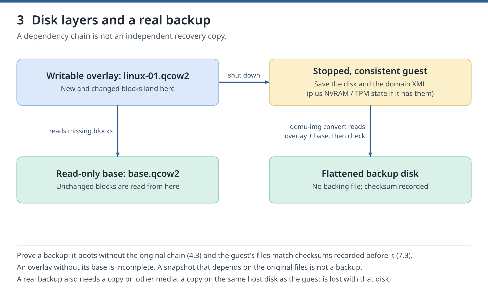

Day 6 unlocks when you finish Day 5. You can still read and practise here; jumping ahead is allowed.
1 Mission briefing
Tonight you will
Cause one SELinux denial, prove it from the audit log and fix only that file's label.
Compare a socket-wide grant with per-VM access control, inside a disposable nested host.
Find who can read the course's secrets and what the guest agent may do, printing no secret.
Back up the stopped guest by flattening its disk chain, lose data on purpose, restore it and check every file inside the guest.
Take a live backup at a consistent moment, copy only the changed blocks, and restore full plus incremental.
Why it matters
Unrestricted management access to qemu:///system is effectively root on the host, so tonight you restrict it with API access rules. Then backups: a guest that boots after a restore is not yet proof, so every restore ends with the data itself checked against checksums. Tonight's backups stay on the guest's own disk; a real backup also needs a copy on other media.
Time
about 4 h 10 min: about 2 h 50 min of lab work (authored per section, including waits for VMs to boot and downloads) plus about 1 h 20 min of ideas and checks.
Chapter 6. See who controls each part of a VM, reach a guest without network through its serial console, prove an SELinux denial, and limit which VMs a user controls. Unrestricted management access to qemu:///system is effectively root on the host; 6.4 shows how API access rules restrict it.
Chapter 7. Back up linux-01 while it is stopped and while it runs, make the live copy consistent with the guest agent, back up only what changed, and prove every restore by checking file checksums inside the guest. A guest that boots after a restore is not yet proof: its data must match.
2 Concepts, one idea at a time
Idea 1 of 8
Prove an SELinux denial
An AVC message records an SELinux decision. A 0644 disk of type user_home_t, attached with relabel='no', fails: DAC allows reads, but sVirt forbids that type. The AVC names svirt_t, user_home_t and permissive=0: SELinux enforced it. The fix touches only that file: restorecon restores its default type, and attaching it without relabel='no' lets libvirt label it.
A polkit rule is JavaScript. Granted org.libvirt.unix.manage by rule 49, kc-reader can stop any VM. Once turned on, libvirt's access control driver also checks each API call against polkit actions org.libvirt.api.*: rule 48 lets kc-reader read every VM but start and stop only acl-a. Rule 49 still opens the socket: two checks, one per layer.
Before anything is backed up, you write files of random data into the guest and save their checksums (SHA-256 fingerprints) on the host. Change one byte and the checksum changes. After each restore, the guest checks every file against a recorded list: the data must match, not just the boot.
An offline backup is taken while the guest is shut off. linux-01's disk is an overlay on base.qcow2, so qemu-img convert reads the whole chain and writes one standalone image. The domain XML belongs to the backup too, as would a UEFI guest's NVRAM file or an emulated TPM's state. The backup holds all the guest's data: umask 077 keeps it root-only.

Figure 3. Separate the active disk chain from an independent backup you can restore.(manual)
With the guest stopped, restoring copies the backup over the disk, after checking it against its recorded checksum: never restore a damaged backup. The disk returns to the moment of the backup, so anything written afterwards is gone. How often you back up decides how much you can lose.
A live backup copies the disk while the guest runs. In push mode QEMU writes a file holding the disk's contents at the job's start. Without guest coordination that copy is crash-consistent, like storage after a power cut. domfsfreeze asks the guest agent to flush and freeze filesystems while the job starts: filesystem consistency, not a copy of RAM.
A checkpoint marks a moment: from then on QEMU records which disk blocks change, in a bitmap kept in the qcow2 file. An incremental backup names that checkpoint and copies only the changed blocks. Work through the block grid below, one step at a time.
The incremental file is not a disk on its own. qemu-img rebase -u writes the full backup's path into its header (changing only the header, copying no data), so the two read as one chain. Rebased onto any other full, it gives a wrong disk without any error: keep each incremental with its full.
A safe practice shell. It knows today's key commands and answers with the real output recorded in the manual on the validation host. Nothing runs on your machine; the real lab below is where it counts.
4 Real lab
These are the manual's validated sections, word for word, as a checklist. Run them on your Fedora 44 host in order. Tick each step after it ran, and tick Check passed once the check holds. Copy buttons copy the exact command.
Chapter 6 Security boundaries and recovery access
See who controls each part of a VM, reach a guest without network through its serial console, prove an SELinux denial, and limit which VMs a user controls. Unrestricted management access to qemu:///system is effectively root on the host; 6.4 shows how API access rules restrict it.
Goal
Cause one SELinux denial, prove it from the audit log, and fix only that file's label.
Make a test disk whose mode 0644 lets DAC allow reads, but whose home-file type user_home_t sVirt forbids:
(
set -euo pipefail
P=/var/lib/libvirt/images/kvm-course
if sudo test -e $P/denied.img; then echo 'STOP: denied.img is left from an earlier try; run the chapter Clean up first'; false; fi
sudo qemu-img create -f raw $P/denied.img 16M
sudo chmod 0644 $P/denied.img
sudo chcon -t user_home_t $P/denied.img
sudo ls -lZ $P/denied.img
)
libvirt normally relabels a disk when it attaches it. relabel='no' in the source keeps the wrong label:
An AVC (Access Vector Cache) message records an SELinux decision. Attach the disk, then find the refusal for this QEMU process and file:
pid=$(sudo cat /run/libvirt/qemu/profile-probe.pid)
if sudo virsh -c qemu:///system attach-device profile-probe ~/kvm-course/ch06/denied.xml --live; then
echo 'UNEXPECTED: the wrongly labelled disk was attached'; false
else
echo 'expected: QEMU could not open the disk'
fi
sudo ausearch -m AVC,USER_AVC -ts recent -p "$pid" -f denied.img | tee ~/kvm-course/ch06/denial.txt
grep -E 'denied.*scontext=[^ ]*:svirt_t:.*tcontext=[^ ]*:user_home_t:.*permissive=0' ~/kvm-course/ch06/denial.txt
permissive=0 means SELinux enforced it. restorecon restores the default type; without relabel='no', libvirt labels the disk at attach:
Read-only disks get the shared type virt_content_t, writable ones the VM's categories.
Expected output
Trimmed; numbers differ:
expected: QEMU could not open the disk
type=AVC … avc: denied { read } for pid=93212 comm="qemu-system-x86" name="denied.img" … scontext=system_u:system_r:svirt_t:s0:c875,c967 tcontext=unconfined_u:object_r:user_home_t:s0 tclass=file permissive=0
Relabeled … from unconfined_u:object_r:user_home_t:s0 to unconfined_u:object_r:virt_image_t:s0
Device attached successfully
-rw-r--r--. 1 qemu qemu system_u:object_r:virt_content_t:s0 … denied.img
Check
The AVC names svirt_t, user_home_t and permissive=0; after the label repair the same disk attaches, and SELinux stayed enforcing.
If it fails
No AVC: check the path and mode, and that auditd runs; some denials are never logged, so a missing AVC does not prove that SELinux allowed the access. Attached at once: check relabel='no' and getenforce.
Compare a socket-wide grant with per-VM access control.
Work inside host-b, a disposable nested host (chapter 0.2), so no rule touches your workstation. Install libvirt there (install_weak_deps=False skips optional packages; the download is still about 200 MiB), define two paused 128 MiB guests without disks, and add the user kc-reader, which cannot log in; runuser runs commands as it:
Without a grant, kc-reader must get an authentication refusal (a timeout proves nothing). A polkit rule is JavaScript in /etc/polkit-1/rules.d. Granted org.libvirt.unix.manage, kc-reader can stop any VM, here acl-b:
ssh -F ~/kvm-course/ssh/config host-b 'bash -se' <<'GUEST'
set -e
if timeout 10 sudo runuser -u kc-reader -- virsh -c qemu:///system list --all 2> ~/kvm-course/denied.txt; then
echo 'UNEXPECTED: access without a grant'; false
fi
grep 'authentication unavailable' ~/kvm-course/denied.txt
sudo tee /etc/polkit-1/rules.d/49-kc-libvirt.rules >/dev/null <<'RULE'
polkit.addRule(function(action, subject) {
if (action.id == "org.libvirt.unix.manage" && subject.user == "kc-reader") {
return polkit.Result.YES;
}
});
RULE
sleep 2
sudo runuser -u kc-reader -- virsh -c qemu:///system destroy acl-b
sudo virsh -c qemu:///system start acl-b --paused
GUEST
The access control driver checks each API call against polkit actions org.libvirt.api.*. Turn it on and add rule 48, which polkit reads before rule 49 because rule files run in name order. It handles only kc-reader's API calls: it refuses drivers other than QEMU, allows connecting and reading every VM, allows start and stop only for acl-a's UUID, and refuses everything else. Rule 49 still lets kc-reader open the socket. Unquoted RULE lets the shell fill in $uuid; the pauses let polkit load rules:
Find who can read the course's credentials and what the guest agent may do, printing no secret.
Only you may read the private SSH key. The seed is an unencrypted ISO, so modes decide who reads its user-data; namei -l shows each directory's mode on a path. The guest agent runs requests as root in the guest; guest-exec runs any command:
700 daniel:daniel /home/daniel/kvm-course/ssh
600 daniel:daniel /home/daniel/kvm-course/ssh/id_ed25519
f: /home/daniel/kvm-course/linux-01/user-data
drwx------ daniel daniel daniel
-rw-r--r-- daniel daniel user-data
f: /var/lib/libvirt/images/kvm-course/linux-01-seed.iso
drwxr-xr-x root root kvm-course
-rw-r--r-- qemu qemu linux-01-seed.iso
{"enabled":true,"name":"guest-exec","success-response":true}
{"enabled":true,"name":"guest-exec-status","success-response":true}
Check
The key is 600 in a 700 directory and your home (drwx------) hides user-data, but every local user can read the seed ISO: never put passwords or private keys in user-data. With guest-exec enabled, permission to issue guest-agent commands gives root command execution inside this guest.
If it fails
Wrong modes: fix them with chmod. No agent answer: check the channel (6.1) and qemu-guest-agent. guest-exec disabled in /etc/sysconfig/qemu-ga is safer, not an error.
Back up linux-01 while it is stopped and while it runs, make the live copy consistent with the guest agent, back up only what changed, and prove every restore by checking file checksums inside the guest. A guest that boots after a restore is not yet proof: its data must match.
Read domain state capture, backup XML, checkpoint XML and qemu-img. The backups stay in the course pool, on the same disk as the guest. A real backup also needs a copy on other media, which this chapter does not validate.
If you removed the course, save the chapter 1.7 scripts again first. LC_ALL=C makes commands in this terminal print the English words that later checks match, such as Job type: Completed. new-guest.sh starts linux-01, or builds it if it is missing:
Put files with known contents in the guest and record their checksums outside it.
A checksum (here SHA-256) is a fingerprint of a file's contents: change one byte and it changes. Write three files of random data to ~/data in the guest, then save their checksums on the host:
ssh -F ~/kvm-course/ssh/config linux-01 'set -e; mkdir -p data; for f in a b c; do head -c 4M /dev/urandom > data/$f.bin; done; sync'
ssh -F ~/kvm-course/ssh/config linux-01 'sha256sum data/*' > ~/kvm-course/ch07/set1.sha256
cat ~/kvm-course/ch07/set1.sha256
Later, ssh … 'sha256sum -c' < set1.sha256 sends this list to the guest, which checks every file against it.
Expected output
On the validation host this printed the following; your checksums differ, because the data are random:
Copy the disk of the shut-off guest into one self-contained file.
An offline backup is taken while the guest is shut off, so nothing writes to the disk during the copy. linux-01's disk is an overlay on base.qcow2 (chapter 1.3), so the overlay alone would miss most of the system. qemu-img convert reads the whole chain and writes one standalone image, as the right side of Figure 3 (chapter 4) shows.
The domain XML belongs to the backup too. A UEFI guest also needs its NVRAM file, and a guest with an emulated TPM its TPM state; grep confirms that linux-01 has neither. A disk backup holds all of the guest's data, so only root should read it: umask 077 makes new files readable only by their owner, and sudo keeps this stricter umask for qemu-img, which runs as root.
(
set -euo pipefail
umask 077
P=/var/lib/libvirt/images/kvm-course
bash ~/kvm-course/bin/stop-guest.sh linux-01
sudo virsh -c qemu:///system dumpxml linux-01 --inactive > ~/kvm-course/ch07/linux-01.xml
if grep -E '<nvram|<tpm' ~/kvm-course/ch07/linux-01.xml; then echo 'STOP: back up the NVRAM and TPM state too'; false; fi
sudo qemu-img convert -O qcow2 $P/linux-01.qcow2 $P/linux-01-offline.qcow2
sudo qemu-img info $P/linux-01-offline.qcow2
sudo qemu-img check $P/linux-01-offline.qcow2
sudo sha256sum $P/linux-01-offline.qcow2 > ~/kvm-course/ch07/offline.sha256
sudo ls -l $P/linux-01-offline.qcow2
bash ~/kvm-course/bin/new-guest.sh linux-01
)
Expected output
Trimmed; sizes and dates differ:
Domain 'linux-01' is being shutdown
image: /var/lib/libvirt/images/kvm-course/linux-01-offline.qcow2
file format: qcow2
virtual size: 20 GiB (21474836480 bytes)
disk size: 772 MiB
No errors were found on the image.
-rw-------. 1 root root 809172992 Oct 2 03:01 /var/lib/libvirt/images/kvm-course/linux-01-offline.qcow2
Domain 'linux-01' started
Check
qemu-img info shows no backing file: line, check finds no errors, and only root may read the file.
If it fails
STOP: linux-01 is still running after 120 seconds: log in and look for a hung service, or force it off with sudo virsh -c qemu:///system destroy linux-01 (like pulling the plug). No space left on device: the backup needs about as much space as the guest uses.
Lose data on purpose, restore the offline backup over the disk, and prove the restore with the checksums.
Simulate the accident: delete the data, and write one file after the backup:
ssh -F ~/kvm-course/ssh/config linux-01 'set -e; rm -r data; echo written after the backup > after.txt; sync'
Restore: stop the guest, check the backup against its recorded checksum (never restore a damaged backup), then copy it over the disk. The domain definition did not change, so the disk is all you replace:
Verify inside the guest. A restore returns the disk to the moment of the backup, so after.txt must be gone. One guest command checks both, so an SSH error cannot pass as success:
ssh -F ~/kvm-course/ssh/config linux-01 'set -e; sha256sum -c; test ! -e after.txt; echo "expected: after.txt is gone"' < ~/kvm-course/ch07/set1.sha256
Expected output
Trimmed:
/var/lib/libvirt/images/kvm-course/linux-01-offline.qcow2: OK
Domain 'linux-01' started
data/a.bin: OK
data/b.bin: OK
data/c.bin: OK
expected: after.txt is gone
Check
The backup and all three files print OK, and after.txt is gone. Whatever was written after the last backup is lost, so how often you back up decides how much you can lose.
If it fails
FAILED for the backup: it changed after 7.2; do not restore it. A data file FAILED or missing: the restore is bad, even though the guest boots.
Clean up
linux-01 now runs from the restored standalone disk; keep it.
Take a live backup at a consistent moment, and start tracking changes for an incremental backup.
A live backup copies the disk while the guest runs. In libvirt's push mode, QEMU writes a file containing the disk's contents at the job's start, even as the guest keeps writing. Without guest coordination this is crash-consistent, like storage after a power cut. virsh domfsfreeze asks the guest agent (the guest service of 6.1) to flush and freeze supported local filesystems; virsh domfsthaw releases them. This gives filesystem consistency, not a copy of RAM or a guarantee that applications flushed their own buffers. Our test files are already closed and synced. Freeze only while starting the job.
A checkpoint marks a moment: from then on QEMU records which disk blocks change, in a bitmap kept in the qcow2 file. 7.5 uses it to copy only those blocks.
Describe the backup and the checkpoint. vda is linux-01's disk; sda, the seed CD-ROM, is read-only and left out:
Freeze, start the job together with its checkpoint, then thaw. trap … EXIT attempts thawing when the subshell exits, including when backup-begin fails. A killed shell, host failure or failed thaw can still leave the guest frozen. Check for thawed below; otherwise use the manual thaw in If it fails before continuing:
Backup started means only that the job began. domjobinfo shows Job type: None once no job runs; --completed then tells how the last job ended, and --anystats includes failed jobs. tee saves the result for inspection. Continue only if this block succeeds:
Trimmed; the time differs. The job counts the disk's whole virtual size (20 GiB), but unused parts take no space in the file:
Froze 1 filesystem(s)
Backup started
Thawed 1 filesystem(s)
{"return":"thawed"}
Job type: Completed
Operation: Backup
File processed: 20.000 GiB
Name Creation Time
-----------------------------------
full 2026-10-02 03:01:53 -0700
Check
The agent reports thawed, the job Completed, and the checkpoint full exists.
If it fails
domfsfreeze fails: the guest agent is not running (systemctl status qemu-guest-agent in the guest). A guest that hangs after an interrupted block may still be frozen: sudo virsh -c qemu:///system domfsthaw linux-01. Job type: Failed: read its Error message: line in ~/kvm-course/ch07/job.txt, and do not use the file.
Take it the same way as the full one, wait for successful completion, and compare the sizes of the two backups. Continue to the loss-and-restore drill only if both subshells succeed:
Simulate the loss again, then restore. The incremental file is not a disk on its own. qemu-img rebase -u writes the full backup's path into its header as its backing file (-u changes only the header and copies no data), so the two files read as one chain, and convert flattens that chain into linux-01's disk. The restored disk carries no bitmap, so the checkpoint no longer matches it: checkpoint-delete --metadata drops libvirt's record, and the next backup must again be a full one.
File processed: 16.062 MiB
780M /var/lib/libvirt/images/kvm-course/linux-01-full.qcow2
17M /var/lib/libvirt/images/kvm-course/linux-01-inc.qcow2
image: /var/lib/libvirt/images/kvm-course/linux-01-inc.qcow2
backing file: /var/lib/libvirt/images/kvm-course/linux-01-full.qcow2
image: /var/lib/libvirt/images/kvm-course/linux-01-full.qcow2
Domain checkpoint full deleted
data/a.bin: OK
data/c.bin: OK
data/d.bin: OK
expected: b.bin stays deleted
Check
The incremental file is a small fraction of the full one. The restored guest holds the newest a.bin, c.bin and d.bin, and b.bin stays deleted.
If it fails
An incremental is usable only on top of the exact full it followed: rebased onto another full, it gives a wrong disk without any error, so keep each incremental with its full. backup-begin fails with a checkpoint or bitmap error, such as missing or broken bitmap: the record of changed blocks is gone, so take a new full backup with a new checkpoint (7.4).
Clean up
Nothing more; the chapter Clean up removes the backups.
Chapter 8 builds a fresh linux-01 in its 8.0. Remove this one, whose disk is now a restored standalone image, then the three backups and this chapter's files:
Every answer explains itself and links to the manual section it comes from. Tip: with a question focused, keys 1 to 4 pick an answer.
6 Boss challenge
7 Recap
Flashcards
Today's badge
Vault Keeper
You fixed an SELinux denial without weakening SELinux, limited a libvirt user to one VM, restored linux-01 from an offline backup and from a full-plus-incremental pair, and proved the data with checksums.
Complete the day to earn it.
Tomorrow
Tomorrow you move linux-01 between two KVM hosts while it is stopped and while it runs, empty a host for maintenance, and finally move it live together with its disk.